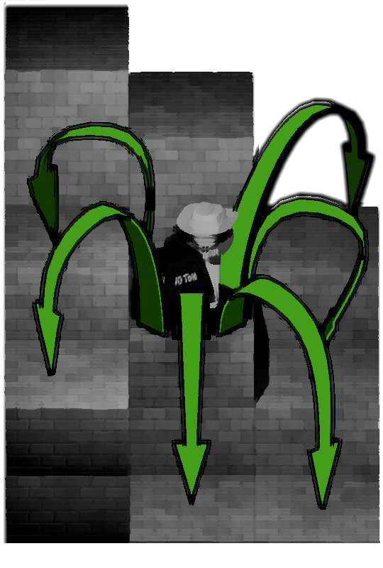
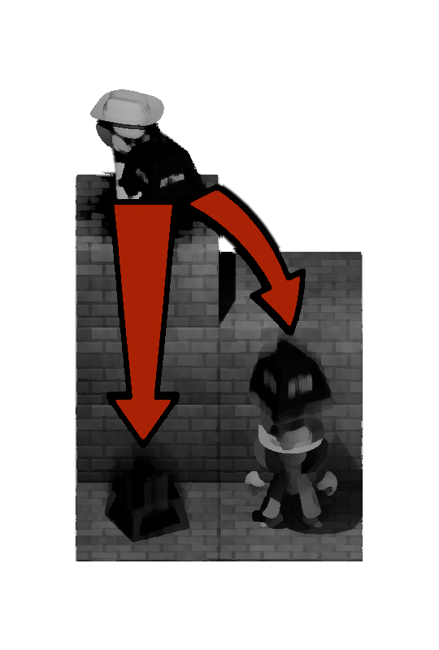
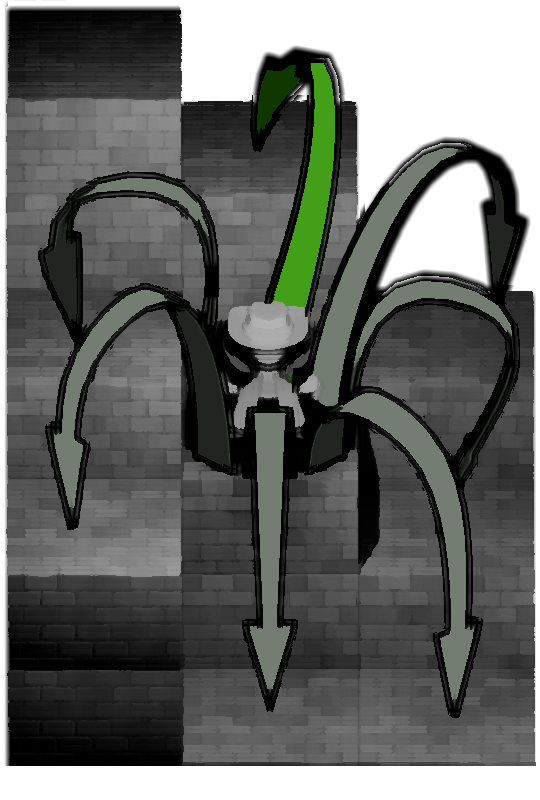

Right, listen up you GOONS! Today's the day we finally deal with those SCUZZBAGS in our RIVAL GANG. It turns out GUN VIOLENCE is ILLEGAL, so today we'll be making do by CRUSHING them with TEN TON LEAD WEIGHTS.
A GOON with a WEIGHT can still move to any ADJACENT tile, including DIAGONALLY ADJACENT tiles. They can also step up by ONE HEIGHT or drop down by TWO HEIGHT onto any similarly adjacent tile.

You can DROP a WEIGHT on the head of any GOON who is on an ADJACENT TILE with a height EQUAL TO OR LESSER THAN your own.
You can also drop your weight on a tile more than THREE HEIGHT below yours, even if it doesn't have a goon on it.

If you don't have a WEIGHT, you can pick up any weight that's been DROPPED.
With no weight, you can climb up THREE HEIGHT instead of just one! If you drop more than THREE HEIGHT onto a goon, they'll be kind enough to break your fall.
Though if you drop that far without a soft landing, you're gonna have a bad time; if you aren't falling on another goon, your own goon will go splat.
If you want to splat your own GOON on purpose, for whatever reason, deselecting your final GOON will let them splat themself.
- This city can be pretty confusing, spatially speaking. Greenhorn GOONS often ask me, How can I tell where I'm standing? Well, you got to get yourself an impression of the LAY OF THE LAND in 3D SPACE when you first turn up! Tiles HIGHER UP are better lit, so those are BRIGHTER. It's pretty foggy, so tiles FURTHER BACK are LOWER CONTRAST! Worst comes to worst, there's a handy little WATERMARK showing the ROW (R) and HEIGHT (H) of a tile in case you get too confused.
- If you want to RESET the game, just click the RESET BUTTON at the top of the screen.
- The game can be played without a mouse, by using tab and space on the keyboard to select tiles.
Limited and judicious use has been made of AI models in developing this web app; OpenAI's GPT-5.5 was used to: debug code, re/write limited sections of code in game.js (signposted in comments: cloneGame), rapidly iterate through possibilities for depth cues in the rendering system in main.js. A test in game.test.js, "Invalid Actions", was also AI suggested and generated. Aria label functionality was implemented with this model as well. I also had ChatGPT explain how to do certain things in CSS and HTML: many inclusions in.tile and .tile-sprite in default.css were suggested by this model.Google's Gemini Flash was also used to rewrite limited sections of code in main and game.js (signposted in comments: createEmptyGrid) as well as check default.css for best practice. Towards the end of the development process, Claude's Sonnet 4.6 was used to catch last minute issues, including making sure the web-app worked across devices and browsers.